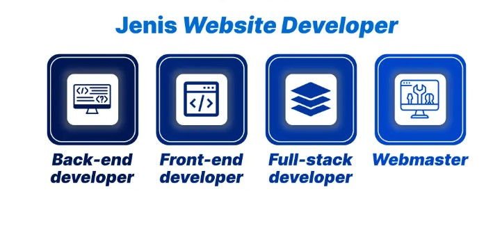
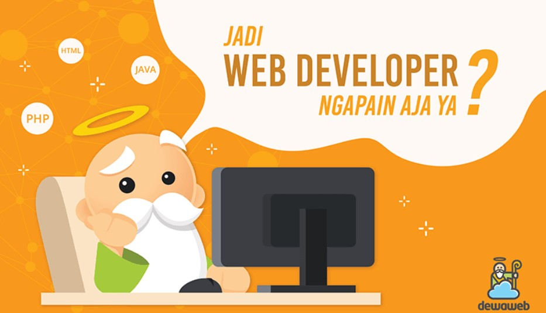

Apa itu web developer?
Web developer adalah seseorang yang memiliki keahlian dalam membangun dan mengembangkan situs web atau aplikasi berbasis web. Tugas utamanya mencakup penulisan kode menggunakan bahasa pemrograman seperti HTML, CSS, JavaScript, dan bahasa server-side seperti PHP, Python, atau Node.js. Web developer bertanggung jawab atas struktur, fungsionalitas, dan kinerja situs agar berjalan dengan baik di berbagai perangkat dan browser.
Web developer biasanya terbagi menjadi tiga kategori: front-end developer yang fokus pada tampilan dan interaksi pengguna, back-end developer yang menangani logika server dan basis data, serta full-stack developer yang menguasai keduanya. Profesi ini sangat penting di era digital karena hampir semua bisnis dan organisasi membutuhkan kehadiran online yang fungsional dan menarik bagi pengunjung.

Jenis Website Developer

Jenis web developer digolongkan berdasarkan pengembangan website yang dilakukan. Secara garis besar, macam-macam pengembangan website terdiri dari:
◆ Back-end developer: Web Developer yang pekerjaannya berkaitan dengan server. Tugas dan tanggung jawab mereka termasuk membuat struktur website, menulis code, hingga memastikan code yang dipasang bisa berjalan dengan baik. Back-end developer juga bertanggung jawab untuk memastikan agar situs web bisa diakses dengan cepat, aman, dan berfungsi dengan baik
◆ Front-end developer: Bertanggung jawab untuk mengembangkan tampilan website yang dilihat oleh pengunjung. Tujuannya, agar website memiliki tampilan yang baik dan fitur yang mudah digunakan oleh user. Front-end developer bertugas untuk merancang tata letak fisik setiap halaman, mengintegrasikan grafik, dan menggunakan HTML dan JavaScript untuk menyempurnakan tampilan situs web.
◆ Full-stack developer: Web developer yang bertugas melakukan pekerjaan front-end dan back-end sekaligus. Mereka bertanggung jawab untuk membangun situs web yang lengkap, mulai dari mengurusi perihal server hingga tampilan visual situs.
◆ Webmaster: Ini pada dasarnya adalah seorang yang bertanggung jawab sebagai pengelola situs web. Tanggung jawab utama mereka adalah terus memperbarui situs web, memastikan bahwa tautan dan aplikasi di setiap halaman berfungsi dengan baik.
Tanggung Jawab dan Tugas Web Developer
Sebagai pengembang web, peran dapat dijalankan di perusahaan, agensi, atau secara lepas dalam menangani proyek dari berbagai klien. Tugas yang diemban bervariasi, tergantung pada jenis pekerjaan dan karakteristik website yang dikembangkan. Namun, secara umum tugas dan tanggung jawab Web Developer meliputi:
◆ Merancang tampilan visual dan menu navigasi pada website agar mudah digunakan dan menarik secara estetika.
◆ Menulis serta meninjau kode untuk situs, biasanya menggunakan HTML, XML, atau JavaScript. ◆ Mengintegrasikan konten multimedia ke dalam situs, termasuk gambar, video, dan aset multimedia lainnya. ◆ Menguji aplikasi web untuk memastikan fungsionalitas dan kompatibilitas di berbagai perangkat serta browser. ◆ Memecahkan masalah teknis, termasuk error server dan status code seperti 404, 5xx, dan lainnya. ◆ Berkolaborasi dengan desainer, pengembang, dan pemangku kepentingan dalam proses perancangan dan pengelolaan website. ◆ Membangun dan mengelola database untuk menyimpan serta mengatur data website secara efisien. ◆ Mendeteksi celah keamanan pada website dan server, serta bertanggung jawab untuk mengatasi dan mengelolanya. ◆ Membuat fitur tambahan pada website atau mengembangkan API untuk integrasi sistem. ◆ Mengelola performa dan kecepatan website agar situs dapat berjalan lancar tanpa hambatan.Skills yang Perlu Dikuasai Web Developer
Untuk menjadi seorang Web Developer yang handal, diperlukan penguasaan berbagai keterampilan, baik teknis maupun non-teknis. Di sisi teknis, kemampuan dalam bahasa pemrograman seperti HTML, CSS, dan JavaScript menjadi dasar yang wajib dikuasai, ditambah pemahaman tentang SEO agar website mudah ditemukan di mesin pencari. Namun, keahlian tersebut harus didukung dengan soft skill yang baik, seperti kemampuan komunikasi, manajemen waktu, dan kerja sama tim, karena pengembangan web sering kali melibatkan kolaborasi dengan desainer, developer lain, hingga pemangku kepentingan. Kombinasi antara hard skill dan soft skill inilah yang membentuk Web Developer profesional yang mampu menghasilkan website berkualitas dan fungsional. 1. Coding front-end
Hard skills penting yang perlu dikuasai jika ingin menjadi web developer handal salah satunya adalah familiar dengan tiga bahasa pemrograman dasar, yaitu HTML, CSS, dan JavaScript. HTML (Hypertext Markup Language) adalah bahasa markup standar untuk membuat halaman website, berfungsi sebagai fondasi struktur dasar dari setiap halaman web. CSS (Cascading Style Sheet) adalah bahasa pemrograman yang digunakan untuk membuat tampilan visual website menjadi lebih menarik, seperti untuk mengatur tata letak, warna, font, dan gaya halaman agar lebih estetis dan konsisten. Sementara itu, JavaScript adalah bahasa pemrograman yang memungkinkan web developer menambahkan fitur interaktif pada setiap menu atau elemen agar pengunjung dapat terlibat lebih aktif. JavaScript juga mengaktifkan berbagai fitur seperti fungsi drag-and-drop, menu dropdown, kemampuan memutar audio dan video, serta beragam interaksi lainnya yang terjadi ketika pengguna mengarahkan kursor atau mengklik gambar dan elemen-elemen dalam situs web. Menguasai ketiga bahasa ini menjadi pondasi utama untuk membangun website yang fungsional, menarik, dan responsif.2. Coding back-end
Berbeda dengan coding front-end yang berhubungan dengan tampilan website di sisi pengguna atau browser, keahlian coding back-end lebih berkaitan dengan server, database, dan logika di balik sistem. Pengembang back-end bertanggung jawab untuk memastikan bahwa data dapat diproses, disimpan, dan dikirimkan kembali ke front-end dengan benar, sehingga seluruh sistem web dapat berjalan secara efisien dan aman.Beberapa bahasa pemrograman yang umum digunakan dalam pengembangan web back-end antara lain PHP, Java, Ruby, dan Python. PHP banyak digunakan untuk membangun aplikasi sisi server serta kerangka kerja yang mempermudah pengembangan. Java merupakan bahasa berorientasi objek yang cocok untuk aplikasi berskala besar dan kompleks. Ruby dikenal ramah bagi pemula dan fleksibel dalam pengembangan. Sementara itu, Python populer karena sintaksnya yang sederhana dan efisien, serta sering digunakan dalam pengembangan web, data science, dan kecerdasan buatan.
3. Testing dan Debugging
Sebagai web developer, memastikan bahwa situs berjalan lancar tanpa hambatan merupakan salah satu tanggung jawab utama. Untuk mencapai hal ini, penting bagi seorang developer untuk memahami cara menguji laman web guna mendeteksi kemungkinan adanya error atau gangguan sistem sejak dini. Pengujian ini mencakup berbagai aspek, mulai dari fungsi tombol, kecepatan loading, hingga kompatibilitas di berbagai perangkat dan browser.Jika ditemukan error, web developer harus mampu melakukan proses debugging dengan tepat. Ini berarti kamu perlu memahami kode pemrograman secara mendalam untuk mengidentifikasi sumber masalah dan menulis solusi yang sesuai. Kemampuan untuk menguji dan men-debug halaman web secara konsisten dan efektif sangatlah penting, karena akan memastikan pengalaman pengguna yang optimal dan menjaga kualitas serta keandalan sistem secara keseluruhan.
4. SEO
Pekerjaan web developer dalam mengoptimasi website tentu akan banyak bersinggungan dengan search engine optimization (SEO). Oleh karena itu, pemahaman yang baik tentang beberapa aspek dasar SEO sangat diperlukan. Beberapa hal penting yang perlu dikuasai oleh web developer antara lain adalah kemampuan membuat URL yang baik dan ramah mesin pencari, memperbaiki kecepatan website agar tidak membebani pengguna maupun proses crawling oleh search engine, serta mengatur metadata seperti title dan description secara tepat. Selain itu, website harus dirancang agar mobile friendly, mengingat sebagian besar pengguna mengakses situs melalui perangkat seluler. Pemahaman terhadap status code error seperti 404 (halaman tidak ditemukan), 5XX (error server), hingga 301 (pengalihan permanen) juga sangat penting dalam menjaga kualitas SEO sebuah situs. Tak kalah penting, struktur HTML juga harus dioptimalkan agar mudah dicrawl dan dipahami oleh Google, sehingga konten yang ada dapat terindeks dengan baik dan muncul di hasil pencarian.5. Responsive Design
Keahlian desain merupakan salah satu keterampilan penting yang dibutuhkan untuk menjadi seorang web developer. Hal ini bukan berarti kamu harus mahir menggambar atau membuat desain grafis, tetapi lebih kepada kemampuan dalam menerapkan responsive design melalui kode pemrograman. Responsive design memungkinkan tampilan situs web menyesuaikan diri secara otomatis dengan berbagai ukuran layar, mulai dari komputer desktop hingga tablet dan smartphone. Seorang web developer harus mampu memastikan bahwa situs tetap terlihat menarik dan berfungsi optimal di semua perangkat, sehingga memberikan pengalaman pengguna yang konsisten dan nyaman tanpa perlu membuat versi terpisah untuk setiap jenis layar.6. Problem Solving
Masalah dalam bahasa pemrograman bukanlah hal yang mudah untuk dipecahkan, dan sering kali membutuhkan ketelitian serta pendekatan logis untuk menemukan solusinya. Oleh karena itu, penguasaan teknik problem solving menjadi keterampilan yang sangat penting bagi seorang web developer. Kemampuan ini akan sangat membantu dalam menghadapi berbagai tantangan, mulai dari menulis kode yang kompleks, memperbaiki error yang muncul, hingga mengembangkan tampilan dan fungsionalitas website agar berjalan sesuai harapan. Dengan keterampilan problem solving yang baik, proses kerja menjadi lebih efisien dan hasil yang dicapai pun lebih optimal.Jenjang Karier dan Besar Gaji Web Developer
Dilansir dari US Bureau of Labor Statistics, profesi Web Developer memiliki prospek karier yang sangat menjanjikan dalam jangka panjang. Bahkan, kebutuhan akan Web Developer diproyeksikan meningkat sebesar 16% pada periode 2022 hingga 2032 — angka pertumbuhan yang jauh lebih tinggi dibandingkan rata-rata profesi lainnya. Di Indonesia, posisi ini juga sangat dibutuhkan dan semakin banyak dicari oleh perusahaan, terutama karena hampir semua industri kini memiliki situs web sendiri untuk memasarkan produk maupun jasa mereka.Tingginya permintaan terhadap profesi ini turut berdampak pada besaran gaji yang ditawarkan. Di Indonesia, gaji seorang Web Developer berkisar antara Rp7,5 juta hingga Rp10 juta per bulan, tergantung pada lokasi, posisi, dan kemampuan perusahaan. Selain itu, banyak perusahaan juga menawarkan pekerjaan secara freelance dengan sistem per proyek, yang bahkan bisa menghasilkan pendapatan hingga puluhan juta rupiah. Web Development menjadi salah satu bidang kerja dengan fleksibilitas tinggi, memungkinkan pengembang bekerja dari mana saja tanpa terikat jam kerja tetap maupun aturan kantor yang kaku.